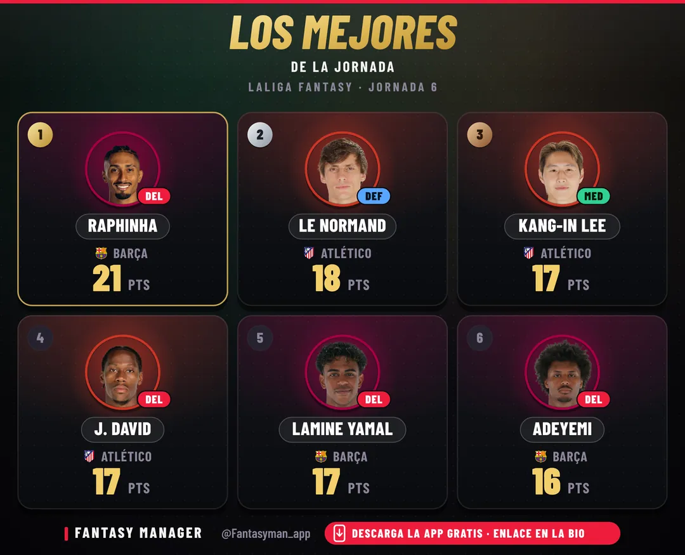

Resumen de la jornada 6
Del jueves 3 de septiembre al miércoles 21 de octubre · puntos oficiales con los de DAZN, a lunes 16 de noviembre a las 22:42
Los mejores de la jornada
| # | Jugador | Pts | Media |
|---|---|---|---|
| 1 | 21 | 13,3 | |
| 2 | 18 | 2,9 | |
| 3 | 17 | 13,1 | |
| 4 | 17 | 6,5 | |
| 5 | 17 | 6 | |
| 6 | 16 | 5,7 | |
| 7 | 16 | 4,7 | |
| 8 | 16 | 4,6 | |
| 9 | 14 | 7,3 | |
| 10 | 14 | 6,1 |
Once ideal de la jornada 6
Lo que ya se jugó, no una recomendación. Cómo se elige.

Resultados y MVP de cada partido
 Real Sociedad0-0Celta
Real Sociedad0-0Celta jue 3, 21:00
jue 3, 21:00 MVP: Ionut Radu 13
MVP: Ionut Radu 13 Rayo2-1Espanyol
Rayo2-1Espanyol mar 15, 19:00
mar 15, 19:00 MVP: Álvaro García 14
MVP: Álvaro García 14 Alavés0-1Valencia
Alavés0-1Valencia mar 15, 20:00
mar 15, 20:00 MVP: Dimitrievski 12
MVP: Dimitrievski 12 Elche2-3Real Madrid
Elche2-3Real Madrid mar 15, 21:30
mar 15, 21:30 MVP: Mbappé 12
MVP: Mbappé 12 Deportivo0-1Sevilla
Deportivo0-1Sevilla mié 16, 19:00
mié 16, 19:00 MVP: Miguel Sierra 14
MVP: Miguel Sierra 14 Atlético4-0Osasuna
Atlético4-0Osasuna mié 16, 19:00
mié 16, 19:00 MVP: Le Normand 18
MVP: Le Normand 18 Barça7-2Racing
Barça7-2Racing mié 16, 21:30
mié 16, 21:30 MVP: Raphinha 21
MVP: Raphinha 21 Betis1-0Getafe
Betis1-0Getafe jue 17, 19:00
jue 17, 19:00 MVP: Á. Valles 11
MVP: Á. Valles 11 Málaga1-3Villarreal
Málaga1-3Villarreal jue 17, 21:30
jue 17, 21:30 MVP: Gueye 16
MVP: Gueye 16 Levante3-1Athletic
Levante3-1Athletic mié 21, 20:00
mié 21, 20:00 MVP: R. Brugué 16
MVP: R. Brugué 16
El MVP es el jugador de los dos equipos que más puntos de LaLiga Fantasy sacó en ese partido.
Los que doblaron su media
| Jugador | Pts | Media |
|---|---|---|
| 14 | 3,4 | |
| 16 | 4,6 | |
| 16 | 4,7 | |
| 10 | 3,1 | |
| 10 | 3,3 | |
| 12 | 3,9 |
6 sacaron el doble de su media o más, con 10 puntos o más; el que más se pasó, Álvaro García: 14 con 3,4 de media.
Los peores de la jornada
| Jugador | Pts | Media |
|---|---|---|
| -7 | 1,1 | |
| -3 | 5,1 | |
| -3 | -0,1 | |
| -3 | 0,7 | |
| -2 | 2,7 | |
| -2 | 0,8 |
6 terminaron restando puntos.
Los equipos que más puntos dieron
Los que más
| Equipo | Pts |
|---|---|
| 143 | |
| 112 | |
| 108 | |
| 98 | |
| 98 |
Los que menos
| Equipo | Pts |
|---|---|
| 4 | |
| 6 | |
| 24 |
La jornada 6, en corto
La jornada 6 se jugó del jueves 3 de septiembre al miércoles 21 de octubre: 10 partidos y 32 goles. El resultado más abultado fue el Barça 7-2 Racing.
Raphinha fue el mejor de la jornada: 21 puntos con el Barça. Álvaro García sacó 14, más del doble de lo que suele (3,4 de media).
El once ideal de lo que se jugó, en 3-4-3, suma 172 puntos. Entre equipos, el Atlético dio 143 puntos, más del doble que el Racing (4). 6 jugadores acabaron en negativo; el peor, Pedro Felipe con -7.
Puntos oficiales de LaLiga Fantasy, con los de DAZN. Cómo hacemos el resumen.